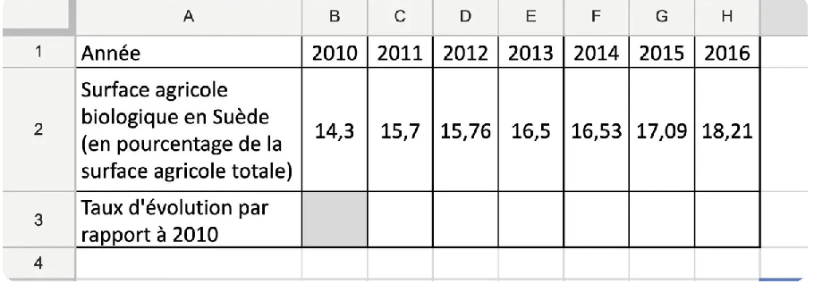
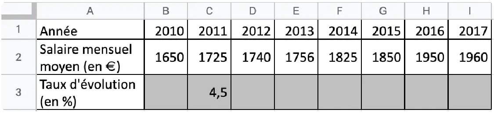
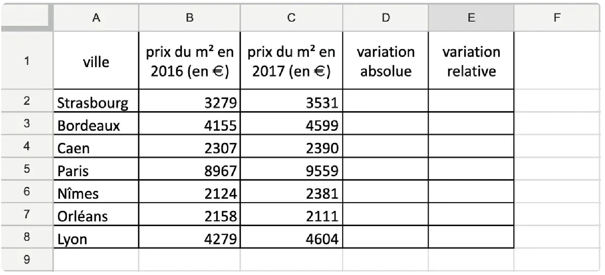
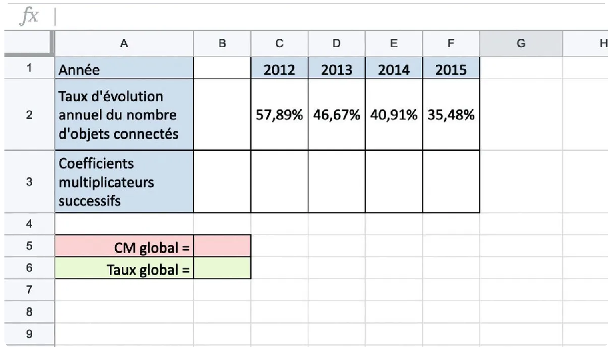

La quantité baisse de \(4\,\%\) : elle ne revient pas à sa valeur de départ.
Attention
\(+20\,\%\) puis \(-20\,\%\) ne se compensent pas : les \(20\,\%\) de baisse portent sur une valeur plus grande.
Ex 72 p 264★★★⏱ 4 minObjectif 7 · Calculer
Certaines plantes vertes peuvent voir leur croissance augmenter rapidement. Une variété grandit de \(60\,\%\) en \(3\) mois, puis de \(50\,\%\) les \(3\) mois suivants. Déterminer le taux de croissance sur \(6\) mois de cette variété de plante verte.
Voir le corrigé
On repère
Deux évolutions successives : \(+60\,\%\) puis \(+50\,\%\).
Sur les deux années, la population baisse de \(5{,}5\,\%\).
Question 2
Formule utilisée
\(v_3=v_1\times\textsf{CM}_g\)
Calculs
\(v_3=45\,304\times0{,}945=42\,812{,}28\).
Conclusion
La ville compte environ \(42\,812\) habitants après ces évolutions.
Ex 81 p 264★★★⏱ 6 minObjectif 7 · Calculer
Le prix d'un baril de pétrole a augmenté de \(7{,}34\,\%\) entre août et septembre, puis de \(9{,}78\,\%\) en octobre, pour chuter ensuite de \(11{,}46\,\%\) en novembre.
Déterminer le taux d'évolution global du prix d'un baril de pétrole entre août et novembre.
Voir le corrigé
On repère
Trois évolutions successives : \(+7{,}34\,\%\), \(+9{,}78\,\%\), puis \(-11{,}46\,\%\).
Le prix du baril a augmenté d'environ \(4{,}33\,\%\) entre août et novembre.
Ex 75 p 264★★★⏱ 8 minObjectif 7 · Modéliser
Lors de l'achat d'une voiture, le vendeur propose une remise de \(10\,\%\) sur le prix HT, puis d'appliquer la TVA de \(20\,\%\). Le client préférerait que le vendeur lui applique la remise de \(10\,\%\) sur le prix TTC.
La proposition du client lui est-elle plus avantageuse ?
Voir le corrigé
On repère
On note \(P\) le prix HT.
Remise de \(10\,\%\) : \(\textsf{CM}=0{,}9\) ; TVA de \(20\,\%\) : \(\textsf{CM}=1{,}2\).
Proposition du vendeur (remise puis TVA) : \(P\times0{,}9\times1{,}2=1{,}08P\).
Proposition du client (TVA puis remise) : \(P\times1{,}2\times0{,}9=1{,}08P\).
Conclusion
Les deux propositions donnent le même prix : la proposition du client n'est pas plus avantageuse.
Attention
L'ordre des évolutions ne change rien : on multiplie les mêmes coefficients.
Ex 74 p 264★★★⏱ 8 minObjectif 7 · Calculer
De juin à août, le temps perdu dans les embouteillages à Paris aux heures de pointe diminue en moyenne de \(80\,\%\), puis augmente de \(275\,\%\) en septembre pour atteindre \(15\) secondes perdues par kilomètre parcouru (source : étude V-Traffic).
Combien de temps un automobiliste perd-il en moyenne par kilomètre en juin ?
Voir le corrigé
On repère
Valeur finale : \(v_3=15\) secondes (septembre).
Évolutions successives : \(-80\,\%\) (juin à août) puis \(+275\,\%\) (septembre).
Valeur initiale (inconnue) : \(v_1\) (juin).
Formule utilisée
\(\textsf{CM}_g=\textsf{CM}_1\times\textsf{CM}_2\) et \(v_1=\dfrac{v_3}{\textsf{CM}_g}\).
Le prix moyen a augmenté d'environ \(1{,}44\,\%\) entre 2011 et 2017.
Question 2
Calculs
\(0{,}87\,\%+0{,}57\,\%=1{,}44\,\%\).
Conclusion
On obtient presque le même résultat : pour de petits taux, la somme est une bonne approximation du taux global, mais ce n'est jamais exact.
Ex 79 p 264★★★⏱ 6 min 🏠Objectif 7 · Modéliser
Lucas place ses économies de \(520\) € sur un compte à intérêts composés au taux annuel de \(2{,}25\,\%\) : les intérêts sont calculés chaque année à partir du nouveau montant total.
Déterminer le montant présent sur son compte, au centime près :
2 ans plus tard ;
3 ans plus tard.
Voir le corrigé
On repère
Valeur initiale : \(v_1=520\) €.
Chaque année, une hausse de \(2{,}25\,\%\) : \(\textsf{CM}=1+\dfrac{2{,}25}{100}=1{,}0225\).
Formule utilisée
Évolutions successives identiques : \(n\) hausses de \(2{,}25\,\%\) donnent \(\textsf{CM}_g=1{,}0225^n\).
Question 1
Calculs
\(520\times1{,}0225^2\approx543{,}66\).
Conclusion
Au bout de 2 ans, il y a \(543{,}66\) € sur le compte.
Question 2
Calculs
\(520\times1{,}0225^3\approx555{,}90\).
Conclusion
Au bout de 3 ans, il y a \(555{,}90\) € sur le compte.
Approfondissement
Ex 76 p 264★★★⏱ 8 minObjectif 7 · Calculer
En 2015, il y a eu \(17\,268\) immatriculations de voitures électriques. Ce nombre a augmenté de \(44{,}26\,\%\) en 2 ans, dont \(25{,}96\,\%\) la première année (source : Fiches-auto.fr).
Déterminer le taux d'évolution du nombre d'immatriculations de voitures électriques de 2016 à 2017, en pourcentage arrondi au centième.
Voir le corrigé
On repère
Hausse globale sur 2 ans : \(44{,}26\,\%\), donc \(\textsf{CM}_g=1{,}4426\).
Hausse la première année : \(25{,}96\,\%\), donc \(\textsf{CM}_1=1{,}2596\).
On cherche \(\textsf{CM}_2\) (de 2016 à 2017).
Formule utilisée
\(\textsf{CM}_g=\textsf{CM}_1\times\textsf{CM}_2\), donc \(\textsf{CM}_2=\dfrac{\textsf{CM}_g}{\textsf{CM}_1}\).
De 2016 à 2017, le nombre d'immatriculations a augmenté d'environ \(14{,}53\,\%\).
Ex 77 p 264★★★⏱ 8 minObjectif 7 · Calculer
Lors des premières représentations d'un jeune humoriste, le nombre de spectateurs fluctue fortement. Il a baissé les 15 premiers jours du mois, puis a augmenté de \(35\,\%\) les 15 derniers jours.
Sachant que le nombre de spectateurs a augmenté de \(25\,\%\) entre le premier et le dernier jour du mois, déterminer le taux d'évolution de la première quinzaine (en pourcentage, arrondi au centième).
Voir le corrigé
On repère
Hausse globale sur le mois : \(25\,\%\), donc \(\textsf{CM}_g=1{,}25\).
Deuxième quinzaine : \(+35\,\%\), donc \(\textsf{CM}_2=1{,}35\).
On cherche \(\textsf{CM}_1\) (première quinzaine).
Formule utilisée
\(\textsf{CM}_g=\textsf{CM}_1\times\textsf{CM}_2\), donc \(\textsf{CM}_1=\dfrac{\textsf{CM}_g}{\textsf{CM}_2}\).
Le nombre de spectateurs a baissé d'environ \(7{,}41\,\%\) la première quinzaine.
Ex 88 p 265★★★⏱ 12 minObjectif 7 · Chercher
Une action en Bourse a connu les évolutions suivantes au cours des 7 dernières heures : \(+3\,\%\) ; \(+1{,}2\,\%\) ; \(-4{,}5\,\%\) ; \(+0{,}2\,\%\) ; \(-5{,}6\,\%\) ; \(-1\,\%\) ; \(+0{,}7\,\%\). À la fin de la 8e heure, le taux d'évolution global est finalement de \(+0{,}3\,\%\).
Quel a été le taux d'évolution entre la 7e et la 8e heure ? Donner le résultat en pourcentage, arrondi au dixième.
Voir le corrigé
On repère
Sept évolutions connues, une huitième inconnue \(\textsf{CM}_8\) ; évolution globale : \(+0{,}3\,\%\), donc \(\textsf{CM}_g=1{,}003\).
Coefficient des 7 premières heures :
\(1{,}03\times1{,}012\times0{,}955\times1{,}002\times0{,}944\times0{,}99\times1{,}007\approx0{,}9387\).
\(0{,}9387\times\textsf{CM}_8=1{,}003\), donc \(\textsf{CM}_8=\dfrac{1{,}003}{0{,}9387}\approx1{,}0685\).
\((1{,}0685-1)\times100\approx6{,}9\).
Conclusion
Entre la 7e et la 8e heure, l'action a augmenté d'environ \(6{,}9\,\%\).
Ex 93 p ?★★★⏱ 10 minObjectif 7 · Calculer
L'écharpe rectangulaire de Pierre a rétréci au lavage : sa longueur a diminué de \(15\,\%\) et sa largeur de \(20\,\%\). Son aire est maintenant de \(2\,448\) cm\(^2\).
Quelle était son aire avant le lavage ?
Voir le corrigé
On repère
L'aire est le produit longueur \(\times\) largeur.
\(\textsf{CM}^2=1{,}7424\), donc \(\textsf{CM}=\sqrt{1{,}7424}=1{,}32\) (\(\textsf{CM}>0\)).
\((1{,}32-1)\times100=32\).
Conclusion
Il s'agit d'une hausse de \(32\,\%\) (et non de \(\frac{74{,}24}{2}=37{,}12\,\%\)).
Ex 101 p ?★★★⏱ 10 minObjectif 7 · Chercher
Défi. Déterminer le taux d'évolution qui, appliqué trois fois de suite, donne une baisse de \(34{,}1497\,\%\).
Voir le corrigé
On repère
Une même évolution appliquée trois fois ; baisse globale de \(34{,}1497\,\%\), donc \(\textsf{CM}_g=1-0{,}341\,497=0{,}658\,503\).
Formule utilisée
\(\textsf{CM}_g=\textsf{CM}^3\)
Calculs
On cherche \(\textsf{CM}\) tel que \(\textsf{CM}^3=0{,}658\,503\). À la calculatrice : \(0{,}87^3=0{,}658\,503\).
Donc \(\textsf{CM}=0{,}87\) ; \((0{,}87-1)\times100=-13\).
Conclusion
Il s'agit d'une baisse de \(13\,\%\).
Ex 103 p ?★★★⏱ 10 minObjectif 7 · Chercher
Énigme. En plaçant \(1\,500\) € sur un compte à intérêts composés au taux annuel de \(1{,}5\,\%\), déterminer au bout de combien d'années ce capital aura doublé.
Voir le corrigé
On repère
Chaque année, une hausse de \(1{,}5\,\%\) : \(\textsf{CM}=1{,}015\).
Le capital double quand il est multiplié par \(2\).
Formule utilisée
Au bout de \(n\) ans : \(\textsf{CM}_g=1{,}015^n\) ; on cherche le premier entier \(n\) tel que \(1{,}015^n\geq2\).
Calculs
À la calculatrice : \(1{,}015^{46}\approx1{,}984\) et \(1{,}015^{47}\approx2{,}013\).
Conclusion
Le capital aura doublé au bout de \(47\) ans.
Objectif 8 : Calculer un taux d'évolution réciproque
En classe
Ex 84 p 265★★★⏱ 5 minObjectif 8 · Calculer
Après un passage en machine à laver, un pull a rétréci de \(7\,\%\). En utilisant des astuces pour lui faire retrouver sa taille d'origine, de quel pourcentage doit-il alors s'agrandir ? Donner le résultat arrondi au dixième.
Voir le corrigé
On repère
Le pull rétrécit de \(7\,\%\) : \(\textsf{CM}=1-\dfrac{7}{100}=0{,}93\).
On cherche l'évolution qui le ramène à sa taille d'origine : l'évolution réciproque.
Le taux réciproque d'une hausse de \(t\,\%\) n'est pas une baisse de \(t\,\%\).
Ex 96 p ?★★★⏱ 12 minObjectif 8 · Communiquer
Lors d'une élection, un candidat affirme qu'il a obtenu \(21\,\%\) de voix de plus que son concurrent. Ce dernier affirme pourtant qu'il n'en a obtenu que \(17{,}4\,\%\) de moins.
Expliquer pourquoi les deux candidats ont raison.
Déterminer le pourcentage de voix obtenues par chacun des deux candidats. On suppose qu'il n'y a pas d'autre candidat et pas de bulletin nul ou blanc.
Voir le corrigé
Question 1
On repère
On note \(A\) et \(B\) les nombres de voix des deux candidats.
« \(21\,\%\) de voix de plus » : on passe de \(B\) à \(A\) avec \(\textsf{CM}=1{,}21\).
\(A=1{,}21B\), donc \(B=\dfrac{A}{1{,}21}\approx0{,}826A\) ; \((0{,}826-1)\times100\approx-17{,}4\).
Conclusion
\(B\) a environ \(17{,}4\,\%\) de voix de moins que \(A\) : les deux affirmations sont vraies, ce sont deux évolutions réciproques.
Question 2
Calculs
\(A+B=100\,\%\) et \(A=1{,}21B\), donc \(2{,}21B=100\,\%\).
\(B=\dfrac{100}{2{,}21}\approx45{,}25\,\%\) et \(A\approx100-45{,}25=54{,}75\,\%\).
Conclusion
Le premier candidat a obtenu environ \(54{,}75\,\%\) des voix et son concurrent environ \(45{,}25\,\%\).
Ex 40 p 260★★★⏱ 4 minObjectif 7 · Calculer
Flash. Une quantité subit une augmentation de \(60\,\%\) puis une baisse de \(50\,\%\). Calculer le coefficient multiplicateur global, puis le coefficient multiplicateur réciproque associé.
Voir le corrigé
On repère
Évolutions successives : \(+60\,\%\) puis \(-50\,\%\).
Formule utilisée
\(\textsf{CM}_g=\textsf{CM}_1\times\textsf{CM}_2\) puis \(\textsf{CM}_{\text{rec}}=\dfrac{1}{\textsf{CM}_g}\).
Il faudrait une hausse de \(25\,\%\) pour revenir à la valeur de départ.
Ex 85 p 265★★★⏱ 6 minObjectif 8 · Calculer
Après une augmentation de ses prix de \(11{,}3\,\%\) puis de \(5{,}7\,\%\), un commerçant souhaite récompenser un client fidèle en lui accordant une remise qui compense ses deux dernières augmentations.
Déterminer le pourcentage de remise que doit accorder le commerçant.
Voir le corrigé
On repère
Deux hausses successives : \(+11{,}3\,\%\) puis \(+5{,}7\,\%\).
La remise doit compenser ces deux hausses : c'est l'évolution réciproque de l'évolution globale.
Formule utilisée
\(\textsf{CM}_g=\textsf{CM}_1\times\textsf{CM}_2\) puis \(\textsf{CM}_{\text{rec}}=\dfrac{1}{\textsf{CM}_g}\).
Le commerçant doit accorder une remise d'environ \(15\,\%\).
Ex 87 p 265★★★⏱ 6 minObjectif 8 · Raisonner
Étienne se plaint car Justine gagne \(66{,}7\,\%\) de plus que lui. Pour le rassurer, Jimmy lui dit qu'il ne gagne que \(40\,\%\) de moins que Justine. Étienne doit-il se sentir rassuré ?
Voir le corrigé
On repère
Salaire d'Étienne : \(E\) ; salaire de Justine : \(J\).
Étienne gagne \(40\,\%\) de moins que Justine : les deux phrases disent la même chose, Étienne n'a aucune raison d'être rassuré.
Pour réviser
Ex 94 p ?★★★⏱ 12 minObjectif 7 · Chercher
Bac STMG Antilles 2018. La feuille de calcul suivante, extraite d'un tableur, donne la part de la surface agricole couverte par l'agriculture biologique (en pourcentage de la surface agricole totale) en Suède entre 2010 et 2016. Les cellules de la ligne 3 sont au format pourcentage à deux décimales.

Quelle formule peut-on saisir en cellule C3 pour obtenir, par copie vers la droite, les valeurs de la plage de cellules C3:H3 ?
Déterminer le taux d'évolution global de la part de la surface agricole couverte par l'agriculture biologique en Suède entre 2010 et 2016. On l'exprimera en pourcentage.
Le gouvernement suédois a pour objectif que, d'ici 2025, \(25\,\%\) de la surface agricole totale soit occupée par l'agriculture biologique. On suppose qu'à partir de 2016, la part de la surface agricole couverte par l'agriculture biologique augmente de \(4\,\%\) par an. L'objectif du gouvernement sera-t-il atteint ? Justifier.
Voir le corrigé
C3 : =(C2-$B$2)/$B$2 (le $ fige la référence à 2010).
De 2016 à 2025, il y a \(9\) hausses de \(4\,\%\) : \(18{,}21\times1{,}04^9\approx25{,}92\).
\(25{,}92\,\%>25\,\%\) : l'objectif serait atteint.
Ex 95 p ?★★★⏱ 15 minObjectif 7 · Modéliser
Bac ST2S Polynésie 2018. Marion est salariée dans le même laboratoire pharmaceutique depuis quinze ans. Elle souhaite étudier l'évolution de son salaire, qui dépend de son ancienneté, de la politique salariale de l'entreprise, des augmentations occasionnelles, etc. Elle a reporté dans la feuille de tableur ci-dessous son salaire mensuel moyen entre 2010 et 2017. Les cellules de la plage B2:I2 sont au format nombre arrondi à l'unité, celles de la plage C3:I3 au format pourcentage arrondi au dixième.

Calculer le taux d'évolution du salaire moyen entre 2011 et 2012. Donner le résultat en pourcentage, arrondi au dixième.
La ligne 3 indique les taux d'évolution du salaire mensuel moyen d'une année sur l'autre. Quelle formule, entrée dans la cellule C3 puis copiée vers la droite, permet d'obtenir les taux d'évolution de la plage C3:I3 ?
Calculer le taux d'évolution global du salaire mensuel moyen entre 2010 et 2017. Donner le résultat en pourcentage, arrondi au dixième.
Montrer qu'en moyenne, son salaire a augmenté de \(2{,}49\,\%\) par an sur la période 2010-2017.
Le client a profité d'une remise d'environ \(16{,}67\,\%\), et non de \(20\,\%\).
Ex 89 p 265★★★⏱ 10 minObjectif 8 · Chercher
Lundi, Audrey possède une certaine somme d'argent \(S\) dans sa tirelire. Mardi, elle ajoute \(40\,\%\) de cette somme ; mercredi, elle ajoute \(30\,\%\) de la nouvelle somme ; jeudi, elle ajoute \(20\,\%\) de la nouvelle somme ; enfin, vendredi, elle ajoute \(10\,\%\) du total de sa tirelire. Samedi, elle dépense tout l'argent qu'elle a ajouté et sa tirelire contient à nouveau la somme de départ \(S\).
Quel a été le taux global d'augmentation de la somme \(S\) entre lundi et vendredi ?
Quel a été le taux réciproque samedi ? Donner le résultat en pourcentage, arrondi au dixième.
Voir le corrigé
On repère
Quatre hausses successives : \(+40\,\%\), \(+30\,\%\), \(+20\,\%\), \(+10\,\%\).
Samedi, la somme a baissé d'environ \(58{,}4\,\%\).
Ex 102 p ?★★★⏱ 15 minObjectif 8 · Raisonner
Énigme. Existe-t-il un réel \(t\) strictement positif tel qu'après une hausse de \(2t\,\%\) puis une baisse de \(t\,\%\), la valeur reste inchangée ?
Voir le corrigé
On repère
Une hausse de \(2t\,\%\) puis une baisse de \(t\,\%\) ; on note \(x=\dfrac{t}{100}\).
La valeur reste inchangée : \(\textsf{CM}_g=1\).
Formule utilisée
\(\textsf{CM}_g=\textsf{CM}_1\times\textsf{CM}_2\) avec \(\textsf{CM}_1=1+2x\) et \(\textsf{CM}_2=1-x\).
Calculs
\((1+2x)(1-x)=1\), soit \(1-x+2x-2x^2=1\), soit \(x-2x^2=0\), soit \(x(1-2x)=0\).
Comme \(x\neq0\), \(x=0{,}5\), donc \(t=50\).
Conclusion
Oui : une hausse de \(100\,\%\) puis une baisse de \(50\,\%\) (\(2\times0{,}5=1\)).
En salle informatique
Ex 56 p 262★★★⏱ 15 minObjectif 4 · Calculer
Tableur. Le prix moyen des appartements anciens dans 7 villes françaises est donné dans le tableau ci-dessous. Les cellules de la colonne E sont au format pourcentage écrit avec une décimale (source : baromètre LPI-Seloger).

Quelles formules peut-on entrer dans les cellules D2 et E2 pour que, une fois recopiées vers le bas, elles affichent les variations absolue et relative pour chacune des villes ?
Reproduire et compléter le tableau dans un tableur.
Dans laquelle de ces villes le prix connaît-il la plus forte augmentation en euros ? en pourcentage ?
Voir le corrigé
D2 : =C2-B2 E2 : =(C2-B2)/B2
Ville
D
E
Strasbourg
\(252\)
\(7{,}7\,\%\)
Bordeaux
\(444\)
\(10{,}7\,\%\)
Caen
\(83\)
\(3{,}6\,\%\)
Paris
\(592\)
\(6{,}6\,\%\)
Nîmes
\(257\)
\(12{,}1\,\%\)
Orléans
\(-47\)
\(-2{,}2\,\%\)
Lyon
\(325\)
\(7{,}6\,\%\)
Plus forte hausse en euros : Paris (\(+592\) € par m\(^2\)) ; en pourcentage : Nîmes (\(+12{,}1\,\%\)).
Ex 59 p 262★★★⏱ 12 minObjectif 4 · Calculer
Tableur. Le tableau ci-dessous donne le prix d'une matière première, en euros par tonne, entre 2011 et 2016. Afin de suivre l'évolution de ce prix, on utilise des indices en prenant pour base 100 le prix en 2011. La série des indices est proportionnelle à la série des prix.
Année
2011
2012
2013
2014
2015
2016
Prix (€/t)
\(248\)
\(188{,}5\)
\(237\)
\(259\)
\(167{,}5\)
\(189\)
Indice
\(100\)
\(76\)
……
……
……
……
Taux par rapport à 2011
……
\(-24\,\%\)
……
……
……
……
Retrouver par le calcul l'indice du prix en 2012 ainsi que le taux d'évolution de 2011 à 2012.
Compléter le tableau.
Voir le corrigé
Indice 2012 : \(\dfrac{188{,}5}{248}\times100=76\).
Taux : \(t=\dfrac{188{,}5-248}{248}=-0{,}24\), soit une baisse de \(24\,\%\) (c'est aussi \(76-100\)).
Année
Indice
Taux / 2011
2011
\(100\)
\(0\,\%\)
2012
\(76\)
\(-24\,\%\)
2013
\(95{,}56\)
\(-4{,}44\,\%\)
2014
\(104{,}44\)
\(+4{,}44\,\%\)
2015
\(67{,}54\)
\(-32{,}46\,\%\)
2016
\(76{,}21\)
\(-23{,}79\,\%\)
Indice \(=\dfrac{\text{prix}}{248}\times100\) ; taux par rapport à 2011 \(=\) indice \(-100\) (en %).
Ex 82 p 264★★★⏱ 12 minObjectif 7 · Calculer
Tableur. Le tableau ci-dessous donne les taux d'évolution successifs du nombre d'objets connectés dans le monde entre 2011 et 2015. La cellule B6 est au format pourcentage avec une décimale (source : IDATE DigiWorld).

Quelle formule faut-il entrer en C3, puis recopier vers la droite, pour calculer le coefficient multiplicateur associé au taux d'évolution du dessus ?
Quelles formules faut-il entrer en B5 et B6 pour calculer le coefficient multiplicateur global et le taux d'évolution global ?
Python. Le programme ci-dessous permet de calculer le pourcentage d'évolution global, connaissant les deux pourcentages d'évolution successifs \(p_1\) et \(p_2\).
1 def evolution(p1, p2):
2 t1 = p1 / 100
3 t2 = p2 / 100
4 CM = …
5 p = …
6 return p
Expliquer pourquoi, dans les lignes 2 et 3, on divise \(p_1\) et \(p_2\) par \(100\).
Compléter les lignes 4 et 5.
Tester ce programme avec \(p_1=24\) et \(p_2=-35\).
Voir le corrigé
\(p_1\) et \(p_2\) sont des pourcentages : on les divise par \(100\) pour obtenir les taux sous forme décimale (par exemple \(24\,\%\to0{,}24\)).
Ligne 4 : CM = (1 + t1) * (1 + t2)
Ligne 5 : p = (CM - 1) * 100
\(\textsf{CM}=1{,}24\times0{,}65=0{,}806\) ; le programme renvoie \(-19{,}4\) : baisse globale de \(19{,}4\,\%\).